Arduino Uno: Components
This guide is an overview of the Arduino Uno PCB, it's components, and how you can breadboard an arduino with just a few components.
The goal is to have a high-level understanding of what each component on an Arduino Uno is doing, and which parts are the most important.
Guide Contents:
The Microcontroller
When making projects with an Arduino, we tend to think of them like the image below. We have a sensor connected, and maybe an LED, and we connect those components to the Arduino's pins. Then, our code can be uploaded to use those components as inputs and outputs.
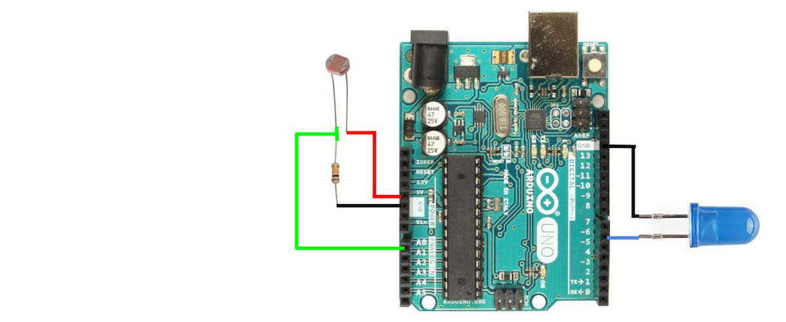In Homemade Hardware, we make our own circuit boards, so it would be helpful to go through the Arduino Uno to understand all its inner workings and design decisions.
The Arduino Uno is probably the most popular microcontroller among makers and students, since its release in 2010. This is still the case today, because of it's giant body of open source software, and ease of use.
This popularity is centralized around the most important part of the Arduino Uno: the microcontroller.
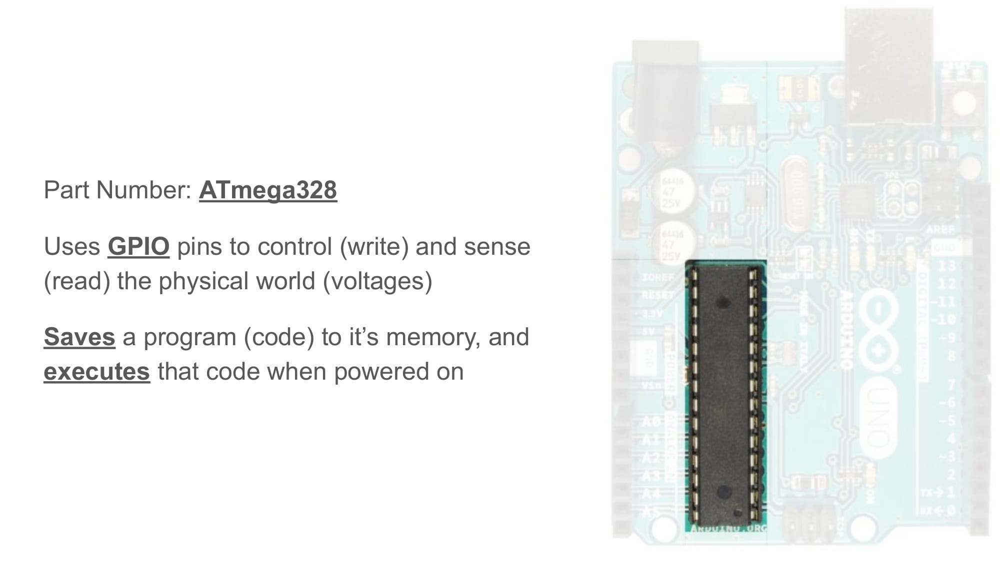A microcontroller is an integrated circuit (IC), which can save custom software to it's internal memory, and then read and write to/from it's general-purpose input/output (GPIO) pins. The Arduino platform can use these GPIO pins with functions like digitalWrite(), digitalRead(), etc.
The microcontroller on the Arduino Uno, is called the ATmega328p (click this link to see the part on Digikey). All of the open source software that has been developed for the Arduino Uno, really it has all been written for this specific microcontroller. Therefore, any PCB with an ATmega328p on it can run the same code as an Arduino Uno.
Microcontrollers can come in many different packages (or shapes). The package can be smaller, bigger, shaped different, but it is still the same microcontroller. Since packages are just a shape, packages are also shared by many parts. That is why so many electronic parts look identical.
The package in the Arduino Uno pictured above is called 28-PDIP, and it is the biggest packages available for this microcontroller.
Because this package has long pins designed to go through holes, this package is called a "through hole" package.
Below is a picture of 4 different Arduino boards. Each of these boards uses an ATmega328p for the microcontroller, however the packages are different. The two Arduino boards on the left use a package called 32-TQFP, and the two Arduino boards on the right use a package called 32-VQFN.
Because these smaller packages have tiny pins designed to weld to the surface of a PCB, this package is called a "surface mount" package.
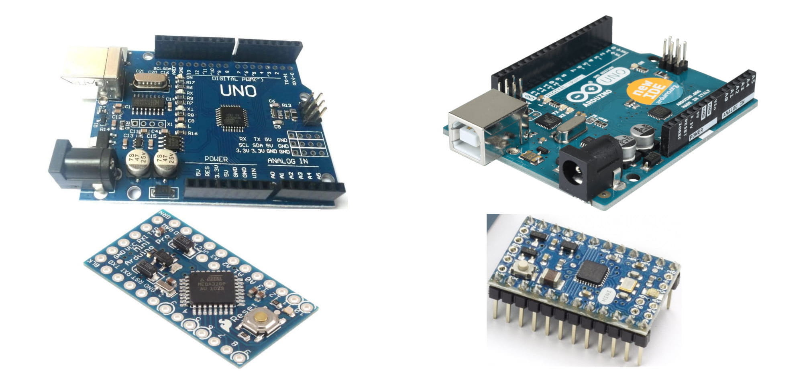Since all the boards above use the ATmega328p, they can all run the exact same code.
Other, newer Arduino boards use entirely different microcontrollers. And since those microcontrollers also have multiple packages (shapes), there are different Arduino boards for each package (shape).
Below are 3 examples of common Arduino microcontrollers, and for each showing two different packages of that same microcontroller. For example, the ATSAMD21 is used on both the Arduino Zero and the Adafruit Feather M0.
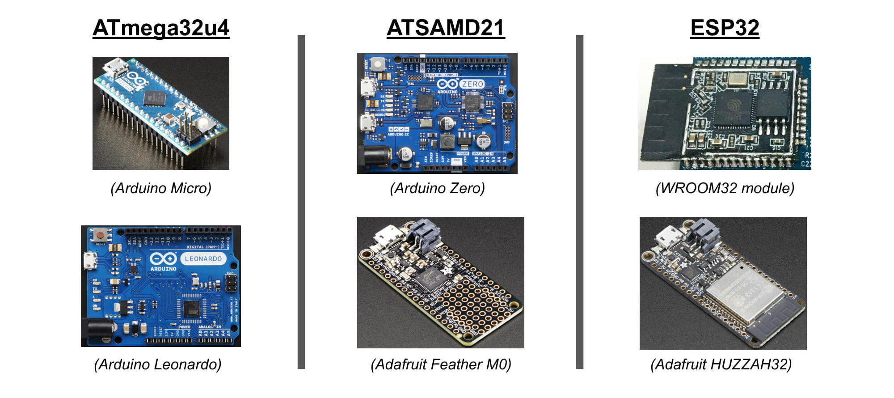This guide will continue to focus, however, on the ATmega328p.
The image below is from a post on Sparkun, where they opened up a fake ATmega328p and took microscopic pictures of its insides.
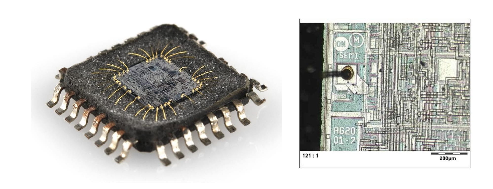The inside of an IC is made up of layers upon layers of silicon, that form basic electronic components (think silicon capacitors and transistors), which then create an overwhelmingly complex machine that can run our code.
Reset Button
Moving away from the microcontroller, there are quite a few other parts on the Arduino Uno.
Starting with the reset button. Different versions of the Arduino Uno put this button in different locations. Mine is in the top right corner of the PCB.
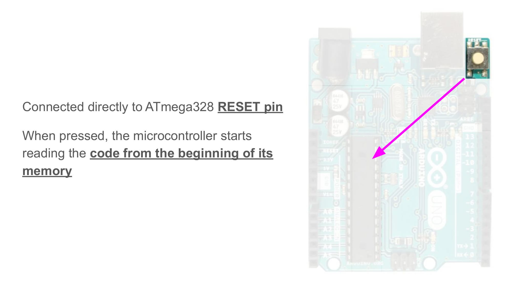One of the many pins on the ATmega328p is called the RESET pin, and this button is connected directly to that pin. If that pin touches ground (LOW), then the microcontroller will restart the code.
You can make a reset button yourself, by connecting any button you have between the RESET and GND pins on your Arduino.
Voltage Regulators
Next, we'll talk about power and voltage.
It is important to know that the ATmega328p needs a power supply with a voltage somewhere between 1.8 - 5.5 volts. The Arduino team decided to make the Arduino Uno power it's ATmega328p on 5V.
Therefore, this Arduino will try to "regulate" any voltage source, so that the voltage at the regulator's output becomes equal to the 5V its designers wanted.
Take a look at the image below.
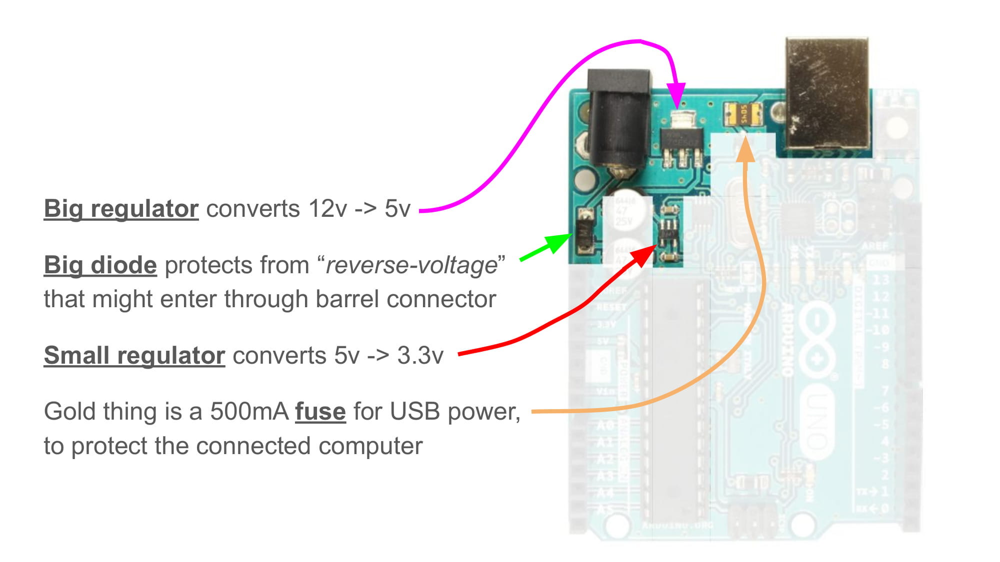There are two connectors on the Arduino Uno that can input power. These are the DC barrel jack on (on the top left), and the USB-B connector (on the top right). The DC barrel connector can take 5-12V as input, and the USB connector will always be 5V (because all USB is always 5V)
The most important part in the image above is probably the "big regulator", which is a part that takes the voltage entering from the DC barrel jack, and converts it to 5V. This voltage regulator requires an "input voltage" of 5-12V. If the voltage rises above 12V, the regulator will break.
In the image below, some parts are highlighted that handle the situation when power is connected to both connectors. An op-amp is used as a comparitor, who's binary output is then used to open/close a transistor on the USB connector's 5V input.
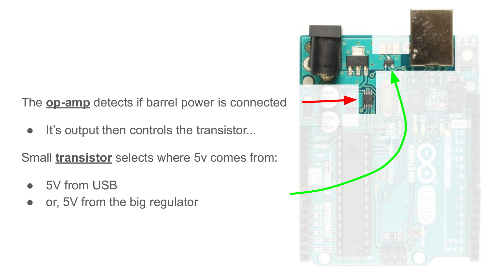This guide won't cover how exactly the parts in the image above work together, but it's neat to know about.
UART to USB
Next up are the parts that handle communication over USB.
If you look closely at the Arduino Uno, you will notice there is actually a second smaller microcontroller near the USB connector. This hidden microcontroller has the part number ATmega8u2, but the part number not very important for this lesson.
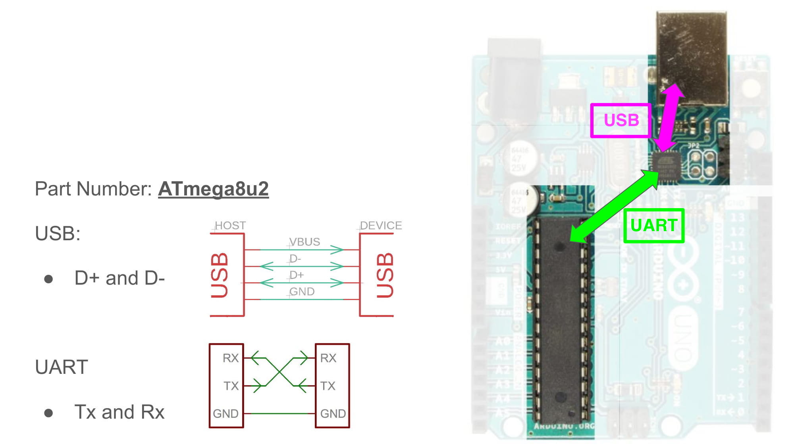The important thing is to know that this hidden microcontroller is being used as a "uart-to-usb adapter".
The ATmega328p, sadly, does not have the ability to talk over USB. However, it can talk over "UART", or what can also be called "serial" or "Tx/Rx".
The image above shows two small schematics, demonstrating how the physical wirings of a USB vs a UART connection are entirely different.
The ATmega8u2 can communicate over both UART and USB as the same time. So, the Arduino Uno uses it as a translator between the ATmega328p and any connected USB host.
Oscillators
Next up are the oscillators, which come in two forms: crystals or resonators.
In the picture below, there is a larger, silver oscillator connected to the ATmega8u2, and a smaller oscillator connected to the ATmega328p.
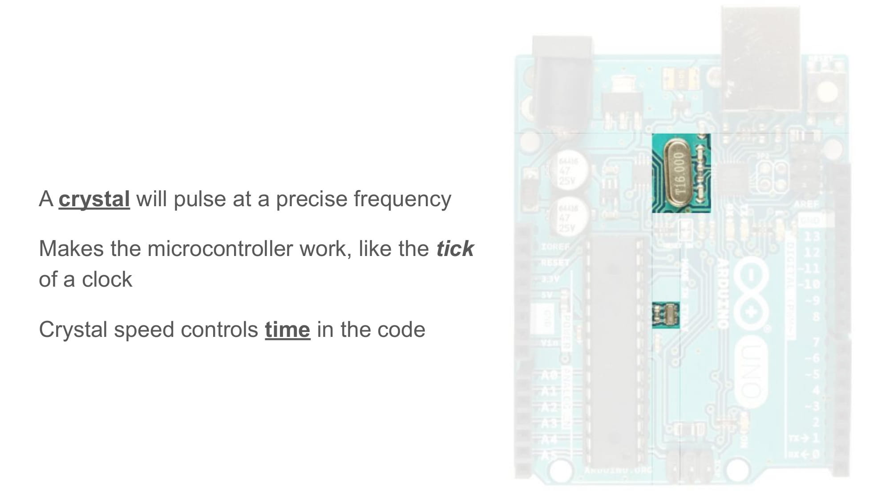Oscillators are parts that create a pulse, like a PWM, except they pulse at one specific frequency, and very accurately.
Microcontrollers need an oscillator to run. Each time the oscillator creates a new pulse, the microcontroller will run the next piece of code.
The speed of the oscillator also controls the accuracy of delay() and other time related things.
Capacitors
Most of the capacitors on the Arduino Uno have one of their legs touching power (either 12V or 5V), and the other leg touching ground (GND).
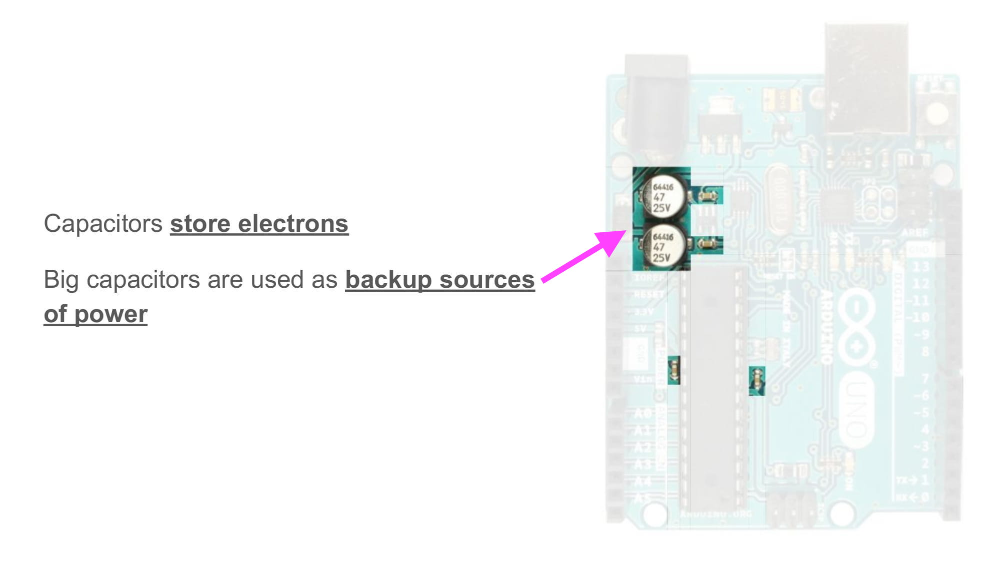When connected like this, the bigger capacitors act like backup power supplies for the PCB. Extra electrons are stored inside them, for any moments when they are need for power high-current loads (like motors or LEDs).
The small capacitors are used for filtering out noise.
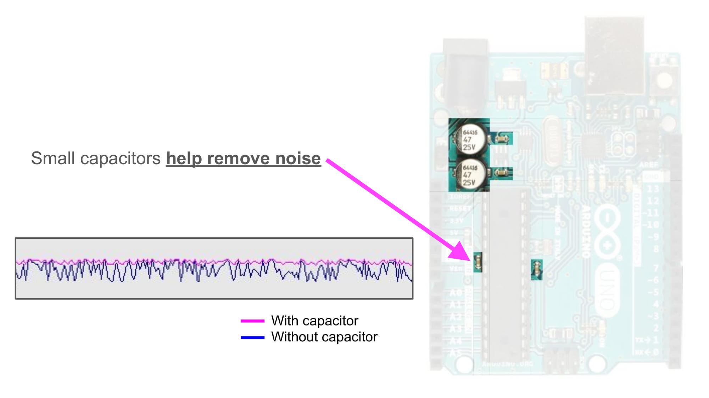In the image above, there is a graph showing voltage (Y axis) over time (X axis).
All microcontrollers and ICs recommend putting a small capacitor near their power pins, to help reduce noise.
Programming Pins
The last component we will go over are the programming pins.
There are two sets of 2x3 row headers pins on the Arduino Uno. One set is located near the USB connector, and the other set is located at the bottom of the Arduino Uno.
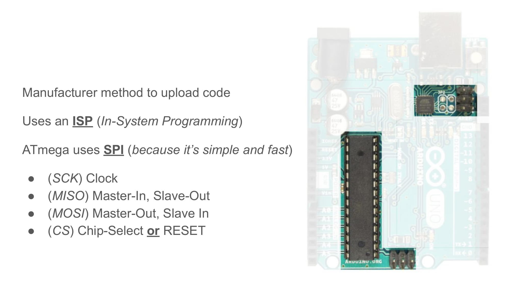These pins are easy to ignore, but they are actually very important for whoever made this PCB. They are the "in-circuit serial programming (ICSP)" pins, and they are the only way to program a brand new ATmega328p.
In another guide, we will discuss this programming process in detail. For now, just know that an external device is used by the board maker to upload the microcontroller's first code. Those 2x3 row headers are where that device connects to.
Bare Minimum Breadboard
Those are all of the components on an Arduino Uno.
If we wanted to only have the bare minimum, most important components, it would probably be in the picture below.
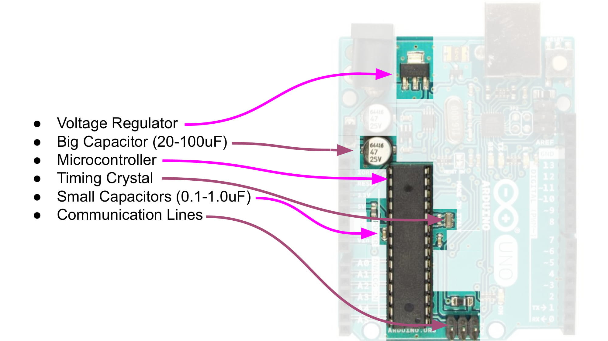Understanding what these most important components are, and why they are needed, is the first step in designing PCBs of your own.
We can also use this knowledge to make an Arduino on a breadboard.
First, let's take a look at a diagram of the ATmega328p pinout (click to make it bigger). This tells use where all the pins are located on the package.

Notice that each pin has multiple names. There are so many names for each pin, that I covered the least interesting of them up, so they would not distract you.
The Arduino names for the pins are in the purple and green, and the power and ground pins are red and black.
The only pin names that seem to have any organized order to them are the grey pins, which are the package's physical pin labels.
Package physical pins always start from 1, and move counter-clockwise around the IC. There is also always some type of label or mark that tells you where pin 1 is located. On the ATmega328p through-hole package, the mark is a half-circle cuttout at one end.
Start with a breadboard that has it's power and ground rails connected with wires on both sides. This makes it easier to connect parts to power and ground later on.
The first components I'll add are an LED and a 220 ohm resistor, connected in series between power and ground. This way, I will know when the breadboard is powered, because the light will be on.
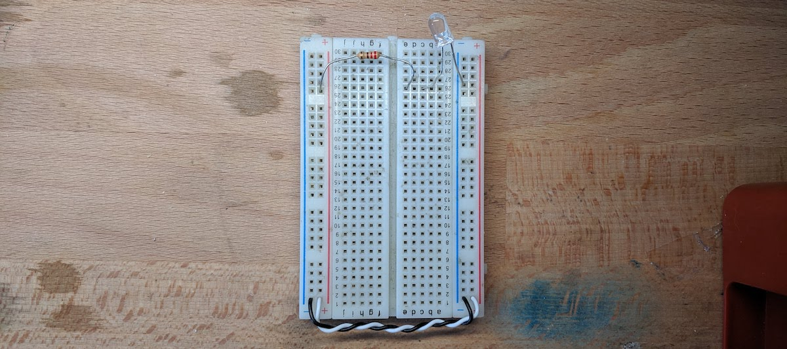An LED connected simply between power and ground is called a "power LED", and they are very useful for knowing if your circuit is on or not.
Plug the microcontroller in, so that it's legs are on either side of the center divider. You can gently bend the legs so that they fit, but be carefull not to break any.
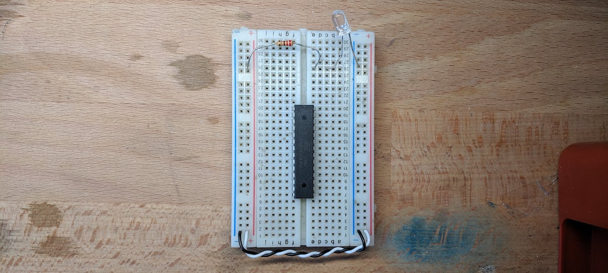Connect the power and ground pins to the breadboard's power and ground rails. Looking at the diagram above, I can see that power is connected at physical pins 7 and 20, and ground is connected at physical pins 8 and 22.
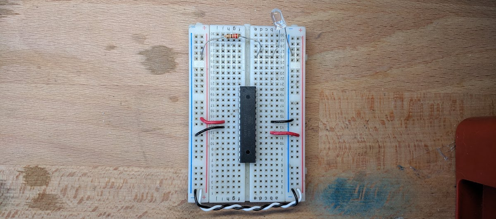The Arduino Uno designers decided to use a 16MHz oscillator connected to the microcontroller. This oscillator is what will make the code run.
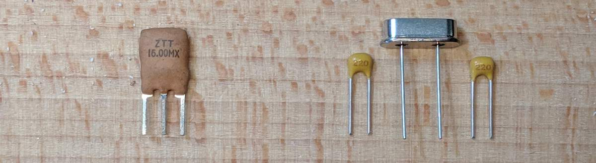The oscillator can be a crystal (two pins) or a resonator (three pins), however it must be 16MHz.
Note: crystals require an additional two capacitors. These capacitors are connected between the crystal's 2 pins and ground, and their value should be somewhere between 10-22pF (pico-farad).
Next, we need capacitors, and all of them will be connected with one leg touching power and the other touching ground. This allows them to "smooth" out the voltage.
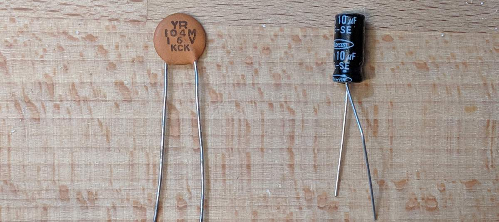Most importantly, I'll put a smaller capacitor between 0.047-0.2uF (micro-farad) as close to one of the microcontroller's power pins. And then the other leg goes to a nearby ground.
Then, I'll put a larger capacitor between 4.7-22uF (micro-farad) between power and ground somewhere not quite as close.
Below is a picture of an example that uses the crystal and two 22pF capacitors:
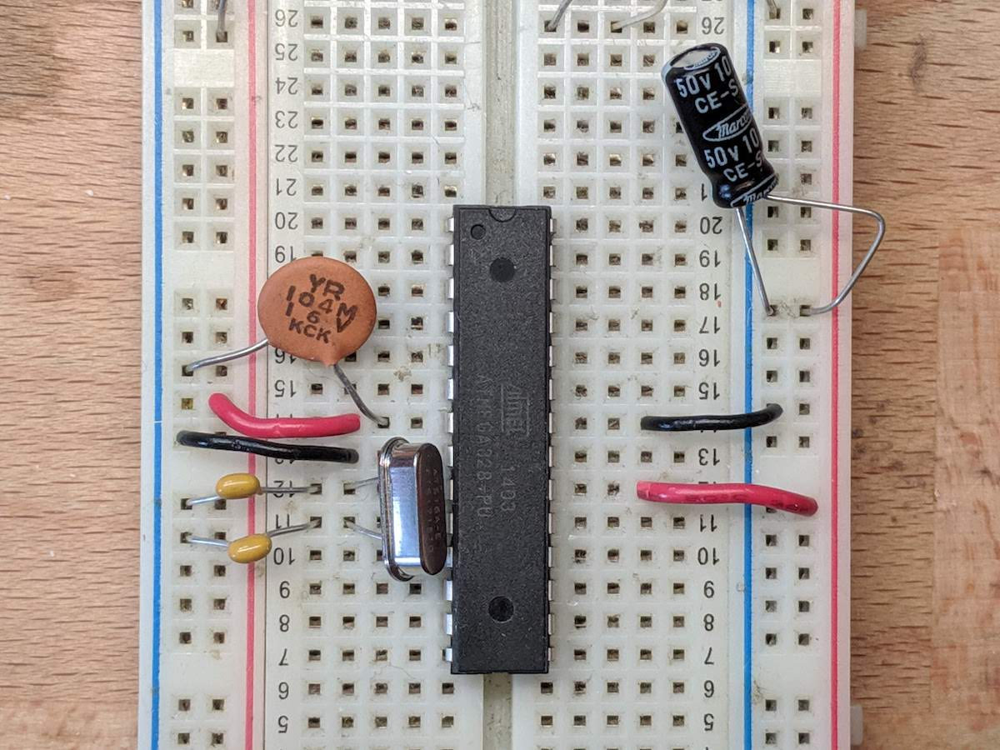And you can also use a resonator, which does not require capacitors. Here's a picture of that wiring:
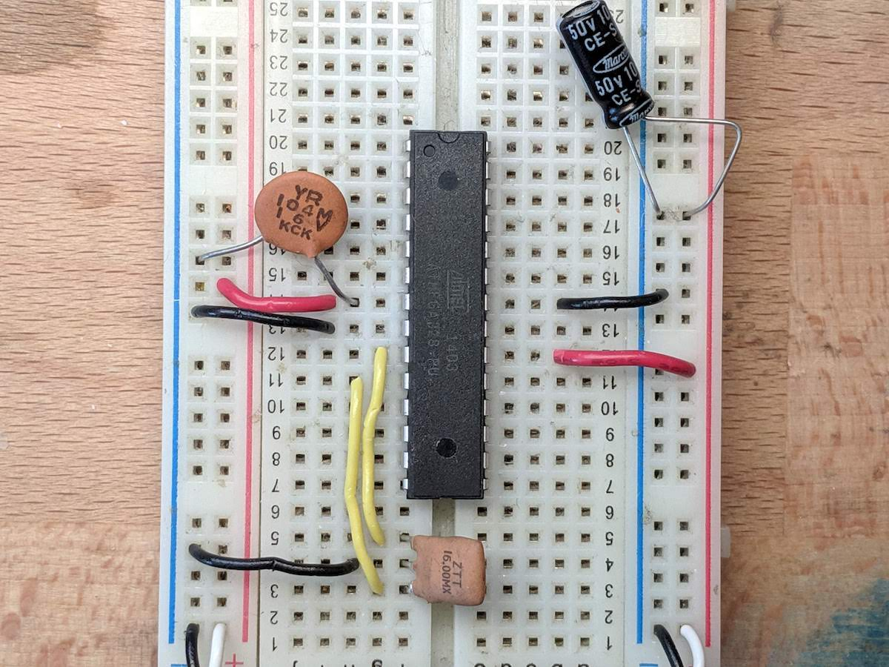We are now ready to power our microcontroller from a safe 5V source. You can take the 5V and GND from an Arduino Uno PCB, and safely power our breadboard from them.
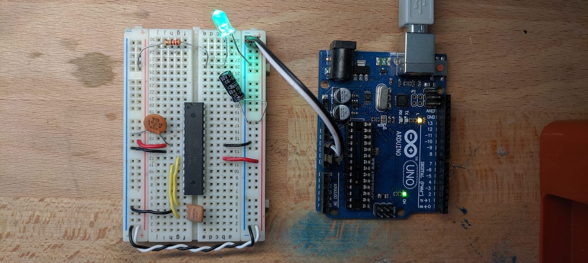However, if we were powering our breadboard from a higher voltage than 5V, we would need a regulator to "drop" the voltage down to 5V.
I'll add a common 5V regulator called LM7805. It has three pins, one for ground, for the input voltage, and the regulated output voltage.
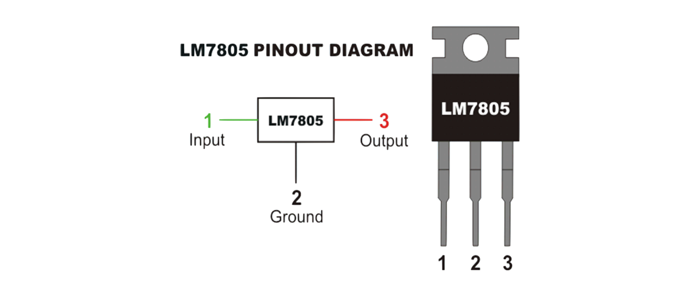Now, I can connected something like a 12V power supply to the regulator, and my breadboard will be safely powered at a regulatored 5V.
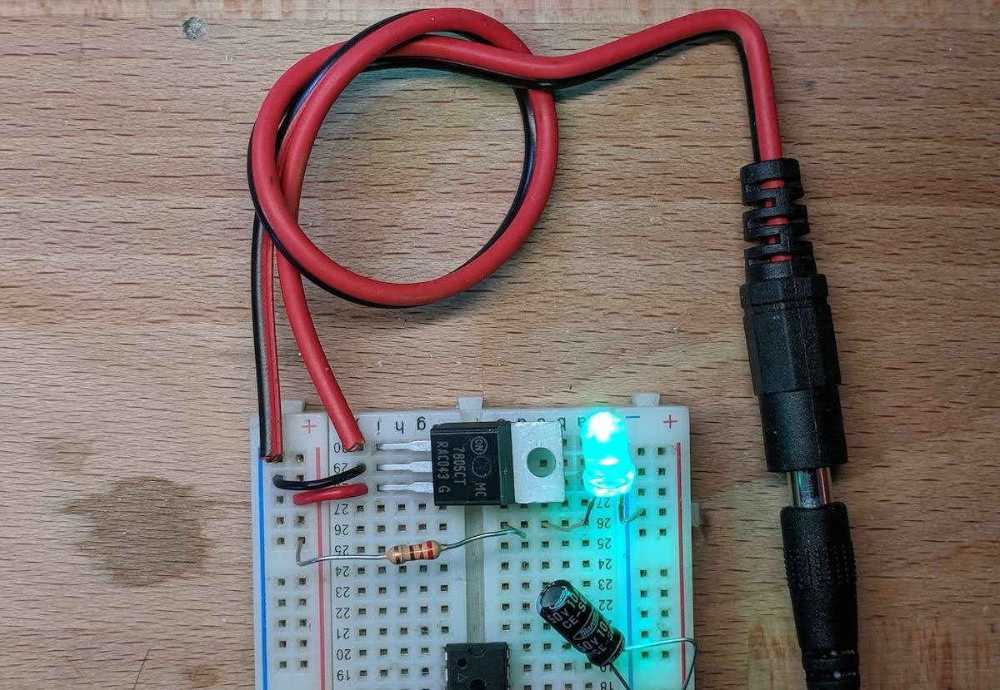Continue reading the next guide on programming, to learn how to run your code on the breadboarded Arduino Uno.